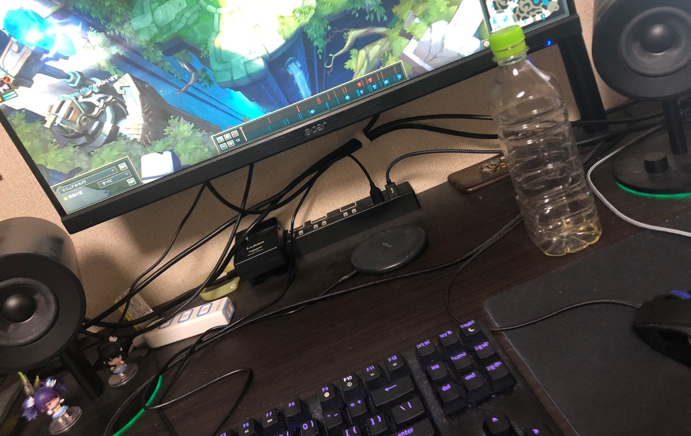

新しいキャンプのカタチを提案してください。
現代のキャンプの課題とは何か？
それは「ゲームができないこと」です。
近年、世間のキャンプへの興味関心は高まってきました。
アニメの影響だったり、密になりにくいエンタメとして人気です。
しかし、僕が唯一キャンプに行きたくないなぁとと思う理由が一つあります。
それが、「ゲームができないこと」です。
僕の趣味はゲームです。休みの日はPCの前から離れずオンライン上でMOBAなどのゲームを何時間もやっています。
↑私の実際使ってるPC
それができなくなると思うと、苦痛で仕方ありません。
ここで、私は考えました。
キャンプはキャンプでも、ゲームのできる
「ゲーミングキャンプ」
があれば私のようなゲーマーでも参加したい！と思ってくれるのではないでしょうか。
ー 概要 ー
- What? -
従来のキャンプのイメージから逸脱した、テクノロジと協力するキャンプスタイル。
イメージは、自然のネットカフェ。
- When? -
いつでも、ただし熱い夏と悪天候は避けたほうがいいかも。
- Who? -
ゲーマーの人、これからゲームを始めたいという人、自然の中でゲームをしたいという人
- Where? -
どこのキャンプ場でも。
- How? -
キャンプの基本は変わりません。
テントを張って自炊を行います。
キャンプ場側はモニタとPC本体の貸出を行います。
マウス、キーボード、マウスパッドその他周辺機器は持参しましょう。
- Why? -
キャンプ中でもゲームに没頭したい。
いつもとは全く違う環境でゲームをしたい。
そもそも、人がキャンプに求める魅力とは何でしょうか。
みんなでテントを建てて、火を起こして、料理して、日が沈むと共に眠る。
綺麗な山と川、自然に囲まれた風景を楽しみ普段の日常から離れる。
でも、それでは少し時代遅れな気がします。
デジタルは進化し、私たちの生活からは切り離すことはできません。
キャンプの持つ「非日常」という特性をアップデートし、自然とデジタルの乖離から調和へ。
そこにキャンプの目指すべき「新しいカタチ」はあると思います。
非日常の体験を、同じ目線にたって、輪になって、立場や常識にとらわれず楽しむ。
それは、この「ゲーミングキャンプ」を通して新しいカタチを感じ取れると思います。